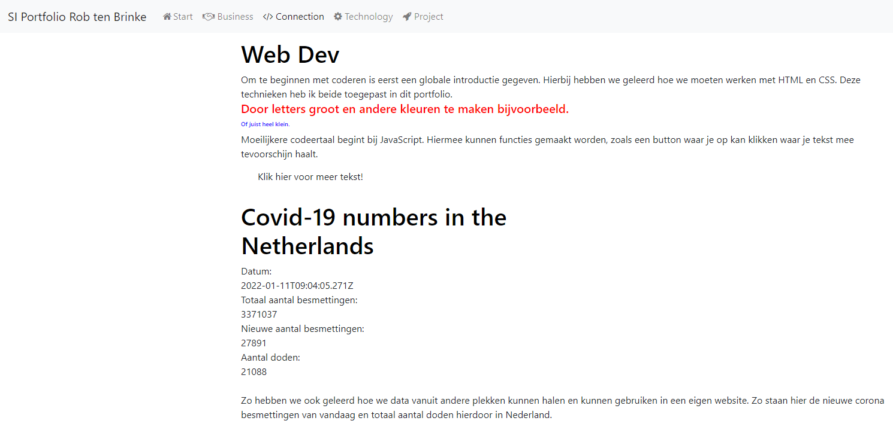

Minor Smart Industries portfolio van Rob ten Brinke
Bij Smart Connection is in de loop van de minor aandacht gegeven aan het maken en ontwerpen van websites. Alles wat in en rondom een website nodig en bezig is om een website werkend te hebben.
Een voorbeeld van een API wat we hebben geleerd is bovenstaande Coronabesmettingen API. Deze API haalt de data op geeft deze data dan weer terug aan de code, daarna wordt de code laten zien op de site. Verder hebben we ook gewerkt om het weer te bekijken. Maar zo zou je ook bijvoorbeeld de tijd kunnen laten zien vanuit verschillende landen.
Zo kan ook Google Maps ingeladen worden op een site. Dit werkt via een API en hier kan dan een locatie laten zien van bijvoorbeeld waar een bedrijf zit, of waar je woont. Een API zoals google maps werkt heel snel en makkelijk. Deze code hoeft alleen op de website gezet te worden en dan hoeft alleen de locatie aangepast te worden naar wat je wilt. Deze locatie kan in de code aangepast worden. Zo heb ik de Ossenmarkt in Zwolle er neergezet, aangezien ik hier nu woon.
Het maken van een website met HTML en CSS was erg veel werk. Alleen dit veranderde erg snel want (gelukkig) wordt bij coderen veel gebruik gemaakt van google. Hiermee worden oplossingen opgezocht, kortere codeermanieren en formats om mee te werken. Hier heb ik dus ook zelf gebruik van gemaakt. Echter heb ik het zelf wel eerst geprobeerd om het zelf in elkaar te zetten. Wanneer ik dit alleen vergelijk met websites van anderen, die wel gebruik hebben gemaakt van andere sites, dan is die van mij erg kaal. Hierom heb ik gekozen om via Nicepage een website op te zetten. Waarbij ik de code vervolgens via Visual Studio Code gewoon kan veranderen. Dat is uiteindelijk deze website geworden.
Het werken met programmeren van websites in een business aspect kan op verschillende manieren toegepast worden. Hieronder heb ik een paar voorbeelden beschreven hoe met programmeren om gegaan kan worden, via een business perspectief.